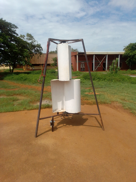

Contexte : Les projets TANDEM visent à développer des solutions technologiques simples, robustes et adaptées aux
contraintes locales, pour répondre aux besoins énergétiques et hydriques des territoires isolés.
Projet 1 : Éolienne
Objectif
Moderniser et instrumenter deux éoliennes pédagogiques (Savonius vertical et bipale horizontal).


Fonction principale
Conversion du vent en électricité avec instrumentation et régulation.
Projet 2 : Moteur Stirling
Objectif
Concevoir un système low-tech de production d’énergie par concentration solaire et moteur Stirling.
Fonction principale
Conversion solaire thermique–énergie électrique, avec instrumentation et asservissement du suivi solaire.
Projet 3 : Dessalinisateur par adsorption
Objectif
Concevoir un prototype de dessalinisateur solaire thermique par adsorption, simple et robuste.
Fonction principale
Produire de l’eau douce à partir d’eau de mer ou saumâtre par cycle solaire d’adsorption / désorption.